To: Professor Chein, M.D.
From: Alex Poniz: MCELLBI X15A – 028
Date: September 28 2017
Re: Assignment I: Tour of the Cell
The Generalized Animal Cell
Cells are the fundamental units of life. As we apply reductionism to the study of more complex organisms, we find that cells are the simplest things that satisfy our definition of “life”. They are the basic unit of every prokaryotic and eukaryotic organism. While they may differ between organisms and tissues, they share common features due to their descent with modification from a common ancestor. As such, all cells share the following features: a plasma membrane, cytosol, chromosomes, and ribosomes.
Organisms such as protists, fungi, plants, and animals fall under the domain Eukaryota. Eukaryotic cells are characterized by the following: DNA in a membrane-bound nucleus, cytoplasm between the plasma membrane and the nucleus, and having other membrane-bound organelles.
Human beings, as animals, may be especially interested in the study of eukaryotic cells as they pertain to the nature of our existence. To facilitate this study, I have summarized the structure-function relationships of the major organelles of a generalized eukaryotic cell. The summaries have been ordered in a manner that should imply some of the relationships between these organelles.
The organelles described are as follows, listed by page number:
3) Cell/nuclear membrane
4) Cytoplasm
5) Nucleus
6) Ribosome
7) Endoplasmic reticulum (rough and smooth)
8) Vesicle
9) Golgi apparatus
10) Lysosome & vacuole
11) Peroxisome
12) Cytoskeleton
13) Centrosome
14) Cilium & flagellum
15) Mitochondrion
16) Cell junctions
Page 17 will provide information on the differences between animal, plant, fungal, and protist cells, and also discuss features of plant and fungal cells that do no occur in animal cells.
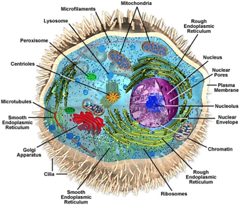
Figure 1: A generalized eukaryotic cell.
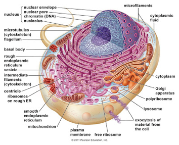
Figure 2: A generalized eukaryotic cell.
Above we see two depictions of generalized eukaryotic cells. They are intended to provide a rough understanding of what components compose the cell, and the orientation of those components within the cell itself. Summaries of the major components will begin on the following page.
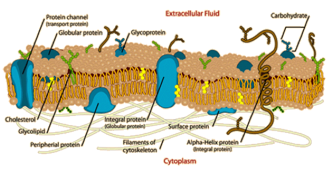
Figure 3: A cross section of the cell/plasma membrane.
Cell/plasma
membrane:
o
Structure:
o
The cell/plasma membrane is often referred to as
a “fluid mosaic”, in that it acts as
a fluid scattered with proteins. It consists of a phospholipid bilayer, which separates the cell and its
intracellular cytoplasm and nucleus from the intercellular region between cells
and other matter. Membrane lipids can
drift laterally, while most proteins
are anchored at specific locations. Types of proteins found in the membrane
include, but are not limited to: integral/transmembrane (extend through the bilayer), peripheral (extend into the bilayer,
but not through), and surface
(contact the bilayer, but do not penetrate it). The bilayer also contains a
degree of cholesterol to temper its
structure. The membrane can also contain carbohydrates
and lipids. The intracellular
components of the membrane may be bonded to the cytoskeleton, and the
extracellular components may be bonded to the extra-cellular matrix. Along with
the nuclear membrane, endoplasmic reticulum, Golgi apparatus, lysosomes, and
vesicles, the cell membrane is part of the “endomembrane system”: a set of
organelles that alter, package, and transport molecules, and are directly
connected through either membranes or vesicle transport.
o
Function:
o
Fundamentally, the cell membrane governs the transport of material in and out of the cell.
It is selectively permeable, meaning it allows some substances to cross it more
easily than others. This is achieved in two main fashions: passive transport (the diffusion of particles through viable
channels down their electrochemical gradient) and active transport (the movement of particles up their
electrochemical gradients through the expenditure of energy to operate chemical
pumps, typically proteins).
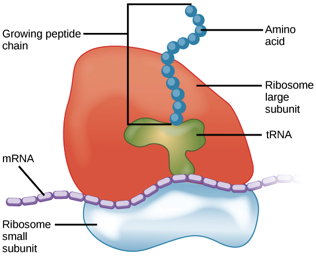
Figure 4: A graphic identifying the cytoplasm.
Cytoplasm:
o
Structure:
o
The cytoplasm is simply the components of the
cell excluding the cell membrane and the nucleus. More specifically, it
contains the non-nucleus organelles
and the cytosol (a complex aqueous
mixture of ions and macromolecules).
o
Function:
o
As the cytoplasm contains many different
organelles, it cannot be said to have a specific function. However, it is the space where most cellular activities occur,
and the cytosol functions with organelle membranes to establish concentration gradients.
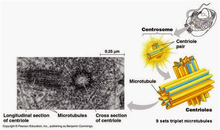
Figure 5: The nucleus and other relevant structures.
Nucleus:
· Structure:
o The nucleus contains the bulk of the DNA in a eukaryotic cell, which is organized into chromosomes. Each chromosome consists of proteins and a single double-helix strand of DNA, collectively called chromatin, which is further embedded in a gel-like nucleoplasm. Additionally, inside the nuclear envelope/membrane (two phospholipid bilayers studded with nuclear pores), the nucleus contains the nucleolus, which is the site of ribosomal RNA (rRNA) synthesis. The space between the two layers of the nuclear membrane is connected to the interior of the endoplasmic reticulum (ER), which surrounds the nucleus, and has both rough (studded with bound ribosomes) and smooth sections.
· Function:
o The nucleus regulates gene expression and is the site of DNA transcription into messenger RNA (mRNA), which is then exported out of the nucleus into the cytoplasm via the nuclear pores.
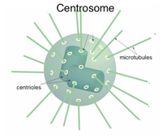
Figure 7: Ribosome locations.
Figure 8: Ribosome structure.
Ribosome:
·
Structure:
o
Ribosomes consist of two protein and rRNA
complexes, known as the large and small subunits. The large subunit rests
above the small subunit, and a strand of mRNA
is found between them. Transfer/soluble
RNA (tRNA/sRNA) serves
as the physical link between the mRNA and the amino acids produced by the
ribosome. Ribosomes are found either in the cytosol (free ribosomes) or embedded (bound
ribosomes) on the outside of the rough ER or nuclear membrane.
·
Function:
o
Ribosomes synthesize
proteins by translating mRNA into a specific sequence of amino acids called a primary structure. Free ribosomes produce
proteins for use in the cell, and bound ribosomes produce proteins for export
outside of the cell.
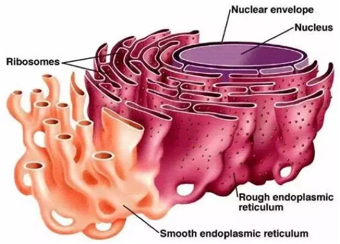
Figure 9: The smooth and rough endoplasmic reticulum.
Endoplasmic
reticulum (ER):
·
Structure:
o
The ER is a large membranous organelle continuous
with the nuclear membrane, and has two distinct regions: rough (studded with ribosomes) and smooth (lacking ribosomes). The space encapsulated by the ER’s
membrane is called the lumen, and
both are populated with proteins produced by bound ribosomes.
o
Function:
§
Rough ER:
·
Folds
proteins, secretes glycoproteins, distributes transport
vesicles (secretory proteins surrounded by membranes), and produces membrane material.
§
Smooth ER:
·
Synthesizes
lipids, carbohydrates, and steroids;
metabolizes carbohydrates, detoxifies poisons, and stores calcium
ions.

Figure 10: A basic vesicle.
Vesicle:
o
Structure:
o
Vesicles are, basically, spherical phospholipid bilayers. There are many different types of
vesicles, some of which will be described separately. They include, but are not
limited to: vacuoles, lysosomes, transport vesicles, and secretory
vesicles.
o
Function:
o
Vesicles have many functions, and may be
involved in processes such as exocytosis
(secretion of vesicle components out of the cell), endocytosis (uptake of extracellular components into the vesicle
and into the cell), as well as intracellular
transport.
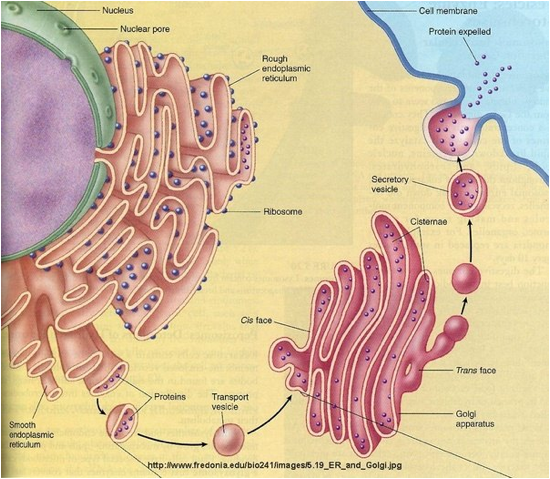
Figure 10: The Golgi apparatus, its substructures, and its processes.
Golgi apparatus:
·
Structure:
o
The Golgi apparatus consists of flattened
membranous sacs, or cisternae. It
has a receiving side (cis face) and a shipping side (trans face). Transport/secretory vesicles can bud off the trans face for
transport to the cell membrane.
·
Function:
o
The cis face receives transport vesicles from the rough
ER and modifies their contents.
It also produces certain macromolecules.
Golgi apparatus contents are sorted and
packaged into transport/secretory vesicles, which bud off the trans face for
export to the cell membrane, lysosomes,
or vacuoles.
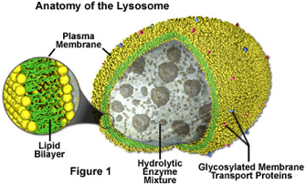
Figure 11: A lysosome and its structure.
Lysosome:
·
Structure:
o
A lysosome is an organelle containing hydrolytic enzymes bound by a single phospholipid bilayer membrane. Furthermore,
the lysosome membrane contains glycosylated membrane transport proteins.
·
Function:
o
Lysosomes use their digestive enzymes to break
down other molecules, in processes such as phagocytosis
(fusing with vacuoles containing nutrients or pathogens) and autophagy (fusing with vesicles
containing the cell’s own organelles and macromolecules).
Figure 12: Sample location, shape, and size of a vacuole.
Vacuole:
·
Structure:
o
Vacuoles are large membranous vesicles derived from the rough ER and the Golgi
apparatus, typically containing a wide
range of molecular contents in an aqueous solution.
·
Function:
o
Vacuoles can have a wide range of functions.
They are frequently used to store
materials for later use, such as storing food after phagocytosis or storing
waste for export out of the cell.
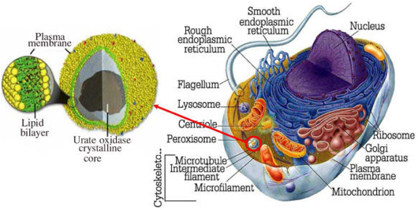
Figure 13: Structure and sample location of a peroxisome.
Peroxisome:
·
Structure:
o
The peroxisome consists of various enzymes including a urate oxidase
crystalline core, surrounded by a single
phospholipid bilayer membrane. They are not part of the endomembrane
system.
·
Function:
o
Peroxisomes perform a wide range of reactions with
many different functions. They are frequently involved in the catabolism of lipids and proteins, and
in oxidative reactions (removing
hydrogen from other molecules, forming hydrogen peroxide as a byproduct, and converting hydrogen peroxide to water).
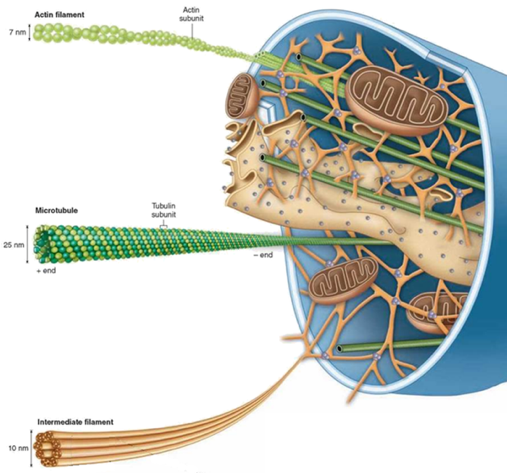
Figure 14: Components of the cytoskeleton and their organization.
Cytoskeleton:
·
Structure:
o
The cytoskeleton is a network of fibers extending throughout the cytoplasm. It is
composed of three substructures: microtubules
(the thickest; composed of tubulin; hollow tubes), microfilaments (the thinnest; composed of 2 intertwined strands of
actin), and intermediate filaments (sized
between microtubules and microfilaments; composed of fibrous keratin coiled
into cables). Microfilaments may be enveloped by the cell membrane and form
small protrusions from the cell called microvilli.
·
Function:
o
Collectively, the three substructures of the
cytoskeleton work to organize and support
the cell’s structure, shape, and activities, by anchoring organelles, providing
paths for motor proteins to carry vesicles, affecting the movement of organelles and particles within the cell,
and affecting the movement of cilia and
flagella.

Figure 15: Micrograph and artistic depiction of the location and basic
structures of centrosomes and centrioles.
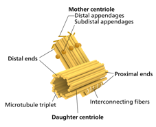
Left to right:
Figure 16: More detailed centrosome depiction.
Figure 17: More detailed centriole depiction.
Centrosome:
·
Structure:
o
Centrosomes are complex organelles, found near the nucleus, containing a pair of
substructures called the mother and
daughter centrioles, oriented at right angles to each other. The centrioles
cylinders of 9 triplets of microtubules
held together by supporting proteins, and are surrounded by a mass of pericentriolar material to which the microtubules
anchor.
·
Function:
o
Centrosomes produce
and organize microtubules.
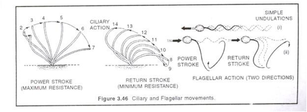
Figure 18: Difference between cilia and flagella motor patterns.
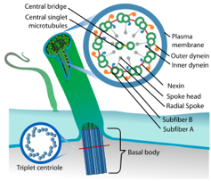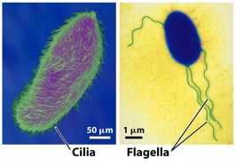
Left to right:
Figure 19: Cillia/flagella core and basal
body.
Figure 20: Cilia and flagella micrographs.
Cilium &
Flagellum:
o
Structure:
o
Cilia and flagella share a common structure. They consist of 9 microtubule doublets
arranged in a ring, with a 2-microtubule singlet in the center of the ring.
This is called a “9+2 microtubule array”
core, which in turn is surrounded by a plasma
membrane, forming an outward
protrusion from the cell. Dynein
proteins attached to the doublets drive the protrusion motion. The
protrusion is anchored at a basal body,
which is a modified centriole that
assembles the core and regulates protein transport. Flagella are longer than
cilia.
o
Function:
o
Cilia and flagella both play key roles in cell movement. The kinetic motion of
the protrusions helps cells pull and push themselves along. In addition to
their size difference, they have different movement patterns.
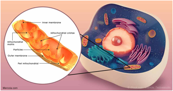
Figure 21: Sample location of mitochondria in the cell.
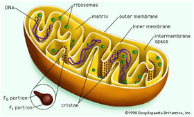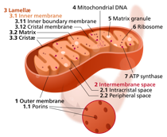
Left to right:
Figure 22: Additional mitochondria detail, including F0
& F1 ATP synthase portions.
Figure 23: Additional mitochondria detail.
Mitochondrion:
·
Structure:
o
Oval-shaped
mitochondria are suspended in the
cytosol of the cell. The have an outer
membrane and an inner membrane, separated
by an intermembrane/peripheral space. The inner membrane encloses
the mitochondrial matrix, and contains
inward protrusions, called cristae,
which increase its surface area. The space between cristae is called the intercristal space. The matrix contains the mitochondrial DNA (mDNA),
ribosomes, enzymes such as ATP synthase,
and matrix granules. ATP synthase is
clustered around the cristae and has F0
& F1 portions to its structure. The outer membrane contains porins, tubular
passive transport proteins allowing diffusion of molecules through the outer
membrane. Mitochondria are theorized to have originally been prokaryotic cells
that became endosymbionts living within the
eukaryotic cell, performing processes otherwise unavailable to the eukaryote.
·
Function:
o
Mitochondria are the “powerhouse of the cell”; they are the sites of cellular respiration, a process by
which they use oxygen to produce ATP,
which stores chemical energy for use
by the cell.
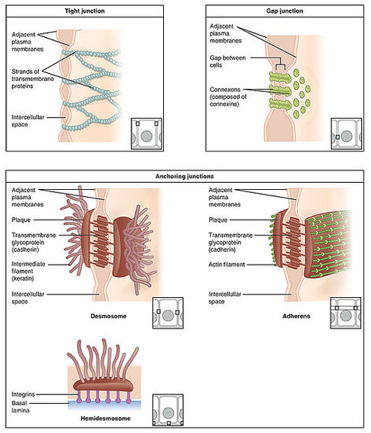
Figure 24: Five types of cell junctions.
Cell Junctions:
o
Structure:
o
There are many different types of cell
junctions, including: tight, gap, desmosome, adherens,
and hemidesmosome.
Each a different structure. Most cell junctions are multi-protein complexes. Cell junctions are shared between cells or the ECM, and are especially abundant in
epithelial tissue.
o
Function:
o
Cell junctions provide contact between cells, enabling communication, and provide
structural support between cells.
§
Tight
Junctions:
·
Cells are
pressed together, preventing leaking
of extracellular fluid
§
Desmosomes:
·
Cells are
fastened together into strong sheets
§
Gap
Junctions:
·
Cells are provided cytoplasmic channels, enabling communication
via exchange of cytoplasmic contents
Differences Between Animal, Plant, Fungal, and Protist
Cells
Protists are relatively simple, yet very diverse, and do not form a natural group. As such, they will not be discussed beyond their definition: “organisms which are unicellular or unicellular-colonial and which form no tissues” – Robert Whittaker, 1969.
|
Animals |
Plants |
Fungus |
|
No chloroplasts |
Has chloroplasts |
No chloroplasts |
|
No walls |
Walls made from cellulose |
Walls made from chitin |
|
Heterotrophic |
Autotrophic |
Heterotrophic |
|
No plastids |
Has plastids |
No plastids |
|
Has centrosomes |
No centrosomes |
No centrosomes |
|
Few small vacuoles |
Large central vacuole |
Large central vacuole |
|
Has lysosomes |
No lysosomes |
Has pseudo-lysosomes |
|
Multicellular |
Multicellular |
Multicellular and unicellular |
|
Glycogen storage molecule |
Starch storage molecule |
Range of storage molecules |
|
Cell junctions |
Plasmodesmata |
Septa |
|
Usually one nuclei per cell |
Usually one nuclei per cell |
Often many nuclei per cell |
|
Diploid nuclei |
Haploid/diploid stages |
Haploid/diploid stages |
|
|
|
|
Table 1. Comparisons between animals, plants and
fungi.
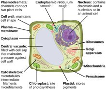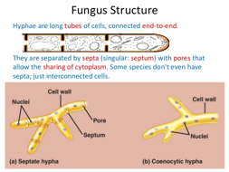
Left to right:
Figure 25. Plant cell structures.
Figure 26. Fungal cell structures.
|
Structure |
Function |
|
Cell wall |
Maintain cell shape and structure |
|
Chloroplast |
Site of photosynthesis:
The conversion of light energy into chemical energy |
|
Plastid |
Stores pigments and/or food |
|
Central vacuole: |
Maintains turgor pressure & stores water & nutrients |
|
Plasmodesmata/Septa |
Channels/pores connecting cells allowing the sharing of
cytoplasm |
Table 2. Structure-Function relationships of unique
plant and fungal features.